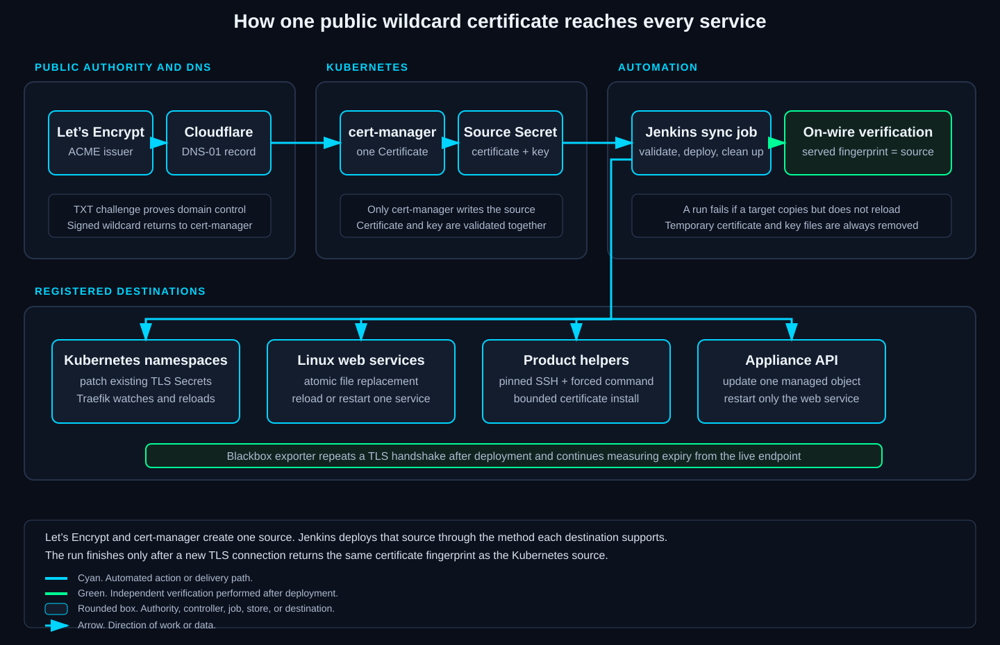
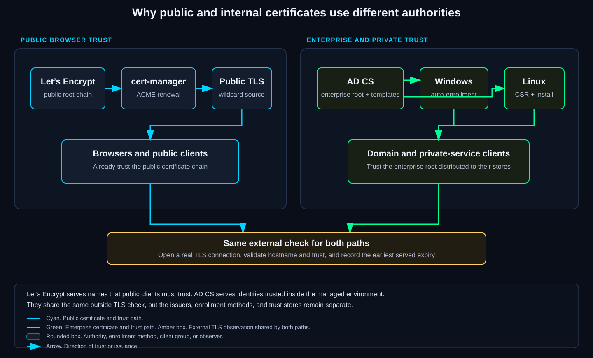
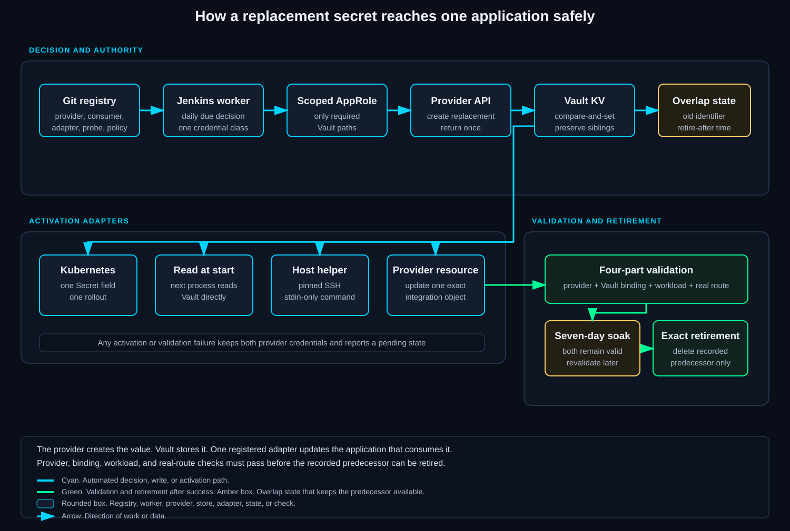
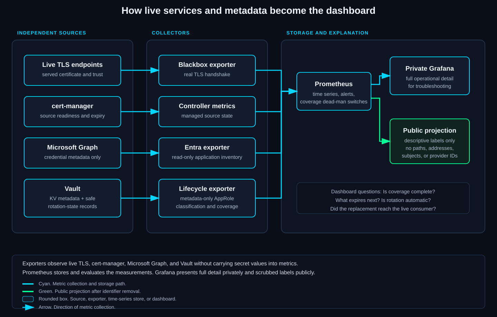

Is anything urgent?
Start with the summary row
Coverage, expiry, readiness, overdue rotation, and failed scrapes show whether the rest of the board needs attention.
Every public certificate renews itself and reaches every consumer that serves it. Every registered secret rotates on a 60-day cycle with a seven-day overlap. A real login proves each change, nobody touches any of it, and the dashboard below shows the current state.
This started with a wildcard certificate that could renew in Kubernetes but still had to reach web servers and appliances outside the cluster. I built the distribution and verification path first. I then used the same sequence for credentials: create a replacement, store it in Vault, update the application that uses it, test the application, and keep the previous credential long enough to recover from a bad change.
Built from the cert-manager configuration, Jenkins certificate synchronization pipeline, credential rotation registries, Vault lifecycle policy, and Prometheus exporters in the repository.
The first version of this system was ordinary: obtain a certificate, copy it where it belongs, and remember to repeat the job before it expires. That worked until the wildcard existed in Kubernetes namespaces, Linux web servers, and appliances that all reloaded certificates differently.
Renewal covered the source certificate, but it did not prove that a copy reached a service or that the service reloaded it. A current file could sit behind a process that was still serving the previous file. A healthy cert-manager resource could coexist with a stale VM. I also found that two valid wildcard issuers behind Traefik could make the ingress controller choose the older certificate.
I built the certificate path around those failures first. Once that worked, I used the same shape for secrets: create one replacement, move it through a controlled path, activate it in the real consumer, test the consumer, and keep the predecessor until rollback is no longer needed.
Today, someone using an application keeps using the same URL. The application reloads or rolls out in the background. If validation fails, the job stops before retirement and leaves the working material in place.
I separated issuance, storage, deployment, and observation because a failure in one part needs a different response from a failure in another. These are the products involved and the work each one performs.
tls.crt and tls.key into one source Secret. It does not distribute that pair outside its namespace.Prometheus updates this dashboard from certificate handshakes, cert-manager state, Entra metadata, and Vault lifecycle metadata. The public view replaces operational names with descriptive labels and removes addresses, subjects, secret paths, provider identifiers, and management links.
Renewal dashboard
Checking live state.
Checking the live renewal dashboard.
Live public Grafana view
Open full screenThe live renewal dashboard is unavailable. This project page remains online independently of the lab, and it does not present stale dashboard data as current.
Is anything urgent?
Coverage, expiry, readiness, overdue rotation, and failed scrapes show whether the rest of the board needs attention.
Which login secret is involved?
Each application shows its nearest expiry and whether replacement is automatic, attended, product-managed, or not applicable.
Did the wildcard reach every consumer?
A destination with less time remaining than the source is still serving an older copy.
Why are some portals separate?
Webmail, appliances, and internal-CA certificates have different issuers and renewal paths.
What rotates a secret?
An overlap row means the replacement is active and the predecessor awaits revalidation or retirement.
Why is a row missing?
A failed scrape, unclassified record, or undeclared target reports a coverage failure.
The site build generates the dashboard structure and queries from the repository. Grafana reads the public Prometheus series, so operational identifiers do not reach the browser.
The wildcard covers the first level of application names. Let’s Encrypt signs it, cert-manager renews it in Kubernetes, Cloudflare carries the DNS validation record, and Jenkins sends the resulting certificate and key to the services that use them.
This division matters because cert-manager finishes its work at the source Secret. It has no knowledge of a certificate file on a Linux VM, an appliance certificate object, or a copy in another Kubernetes namespace. The Jenkins job knows those destinations and how each service reloads.

These are the six things one run has to accomplish. Steps one through three create a replacement. Steps four and five put it into use. Step six proves the live result.
tls.crt and private key in tls.key. Jenkins verifies the pair and remaining lifetime before deployment.Two independent wildcard Certificates once existed behind the same Traefik controller. Both were valid, but Traefik’s global TLS selection could serve the older lineage for a hostname whose namespace contained the newer copy. The fix was architectural: keep one cert-manager owner, copy its result, and verify every destination against that source.
| Consumer class | Delivery | Activation | Proof |
|---|---|---|---|
| Kubernetes ingress | Patch the existing TLS Secret in the application namespace | Traefik watches the Secret | Compare the certificate served for each application name |
| Linux web server | Atomic Ansible or SSH file replacement | Reload or restart the owning service | Compare the live TLS fingerprint with the source |
| Proxmox family | Forced-command helper accepts bounded input | Product certificate command restarts the proxy | Read the custom certificate back and test the live UI port |
| OPNsense | Update one managed Trust certificate through its API | Restart only the web interface service | Require the named certificate object and the live fingerprint to match |
Atomic replacement swaps complete files, so a service cannot read a half-written pair. A forced-command SSH key can run the certificate helper but cannot open a general shell.
OPNsense stores certificates as Trust objects. Its API updates one object and restarts only the web interface.
Public browsers already trust Let’s Encrypt. Private services use Active Directory Certificate Services, Microsoft’s domain certificate authority, whose root is distributed to managed computers.

Windows auto-enrollment uses Group Policy and an AD CS template, which defines purpose, names, lifetime, and enrollment permission. Windows requests and renews without moving the private key between machines.
Linux creates its private key locally and submits a CSR, a request containing the public key and names. AD CS returns the signed certificate and chain; Linux installs them and reloads the service.
Blackbox exporter validates the name, trust chain, and live expiry on both paths, catching an expired leaf, untrusted chain, or missed reload. Some internal leaves are still watched rather than automatically renewed.
A client secret is a password an application uses when it authenticates as itself. API tokens and service keys serve a similar purpose for other products. Creating a replacement at the provider does not make an application use it. The replacement still has to reach the application’s configuration, the process has to reload, and a real authentication request has to succeed.
I call the system that creates and revokes a credential its provider. Microsoft Graph manages the Entra client secrets. Grafana, Zabbix, Jenkins, NetBox, Cloudflare, OPNsense, and LiteLLM expose product APIs for their own credentials. Where a product has no secret-safe update API, a small helper on the host accepts the value through standard input and can change one allowlisted setting.

Certificates share one deployment source. Credentials do not because each provider creates them differently and each application stores them differently. A reviewed registry describes those differences so the worker does not infer where a value belongs.
| Consumer pattern | What the worker changes | How it proves success |
|---|---|---|
| Kubernetes application | One key in one existing Secret, then one Deployment or StatefulSet rollout | Provider authentication, Secret-to-Vault match, workload health, and the application’s sign-in route |
| Read-at-start script | Vault only; the next invocation retrieves the replacement | A read-only provider request using the exact application permission |
| Linux-hosted application | Stdin-only forced command updates one allowlisted setting | Pinned host identity, stored-value fingerprint, process health, and a live login or API check |
| Provider-hosted configuration | One exact identity-provider or integration resource through its API | Read-back of stable metadata plus a new authorization or service request |
| Product with no secret-safe interface | No unattended mutation | Attended activation remains visible until the product offers a safe input path |
Jenkins could prove that it wrote a file or Secret, but not what a browser received. The observation path measures the service independently.

Each exporter converts one source into metrics. Blackbox exporter opens the TLS connection; the Entra and Vault exporters collect metadata without receiving existing secret values.
Prometheus stores the metrics and evaluates alerts. Grafana groups the resulting series by application and renewal path.
| Question | Signal | Why it exists |
|---|---|---|
| What certificate is the service presenting? | Blackbox exporter TLS handshake expiry | Catches stale files, missed reloads, the wrong SNI certificate, and broken trust |
| Did cert-manager issue a usable source? | Certificate readiness and expiration metrics | Separates an issuance failure from a fan-out failure |
| Which Entra credentials exist and when do they expire? | Read-only Microsoft Graph metadata exporter | Finds new, unmapped, overlapping, approaching, or overdue credentials without reading secret values |
| Is every Vault record classified and on the promised path? | Metadata-only Vault lifecycle exporter | Turns new or unclassified records into visible gaps rather than silent inventory growth |
| Did a rotation finish or stop in overlap? | Value-free rotation-state records | Shows active, overlap, pending, failed, and retirement timing without leaking the credential |
Most of the time, no rotation is happening. The controllers and exporters watch. Jenkins wakes only when a schedule or an operator starts a run.
| When | What runs | What a quiet result means |
|---|---|---|
| Continuously | cert-manager watches the Certificate; exporters refresh live TLS and metadata; Prometheus evaluates alerts. | Sources and consumers remain observable between changes. |
| Monthly | Jenkins validates and deploys the wildcard. | Destinations either remain matched or receive the newer source. |
| Daily | Credential workers evaluate due, pending, and retirement-ready entries. | An item that is not due causes no replacement. |
| During overlap | The replacement is active and the predecessor remains available. | A failure leaves both credentials in place. |
| After a change | The worker checks authentication, binding, workload health, and the real route. | The dashboard records completion, overlap, or the pending stage. |
A certificate-monitoring merge left two modules under the same YAML key. The blackbox exporter refused to start. Prometheus then lost the shared probe target, and the NOC made many healthy services look down.
The failure was in the observation path, not in every application. The dashboard initially could not distinguish “the probes are unavailable” from “every service failed.” That distinction now matters in both the tests and the dashboard coverage signals.
Each parent branch contained one valid module. The merge kept both definitions. The old YAML test used a parser that silently accepted the last duplicate key, so CI approved a configuration the exporter rejected.
The two definitions were reconciled, dependent probes were checked, the generated ConfigMap revision changed, and the exporter rolled out. A direct probe and the Prometheus target then returned healthy.
CI now performs strict duplicate-key validation. The dashboard also treats missing coverage as its own failure class, so a dead observer cannot masquerade as a fleet-wide outage.
I would instrument rotation events while building the workers. The dashboard measures current state, but attempt and retry history still comes from Jenkins logs.
I would also separate “implemented” from “automatic” earlier. A worker becomes automatic after activation, real authentication, overlap, revalidation, and exact predecessor retirement have all passed.